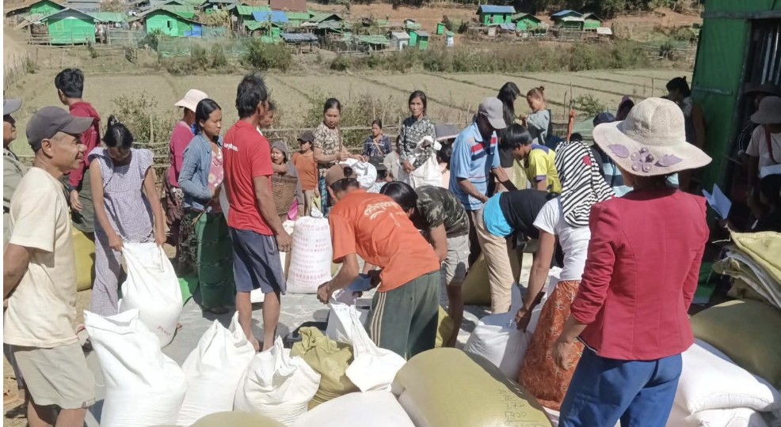
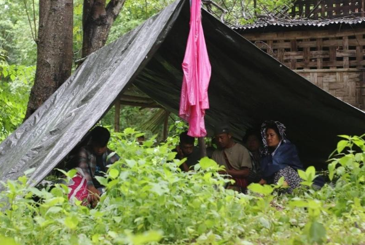

Crisis Background
In early June 2025, a moderate earthquake struck Southern Shan State, severely affecting vulnerable Karenni communities residing in Nyaung Shwe, Kalaw, and the Inlay region. Many of the impacted households were already displaced due to conflict in Kayah State. The earthquake damaged temporary shelters, disrupted market access, and compounded existing humanitarian needs.
In response to this emergency, relief efforts were promptly targeted to secure stabilization resources and re-establish immediate core safety baselines across the affected camp extensions.
Our Response Details

Population Reached
CTER successfully delivered aid to 3,908 individuals across 28 displacement sites. Distributions strictly prioritized vulnerable groups, directly supporting 1,485 children under 18 years old, women-led households, and 277 Persons with Disabilities (PWDs).

Emergency Food
To stabilize immediate food security, standard rations were distributed to cover 7–10 days of basic consumption. Packages included sacks of rice (50kg per 4 persons), cooking oil, and salt.

Shelter & NFIs
To improve living conditions and protection from weather and vector-borne diseases, CTER distributed Non-Food Items including heavy-duty tarpaulins, winter blankets, and mosquito nets to the most severely affected families.

Accountability
The response was carried out in close coordination with community focal points and women representatives. All activities strictly adhered to Do No Harm, Inclusion, and Duty of Care principles to ensure safe and respectful delivery.
To view the full narrative report, distribution constraints, and ongoing unmet needs, please download the activity report.
Download Full PDF Report